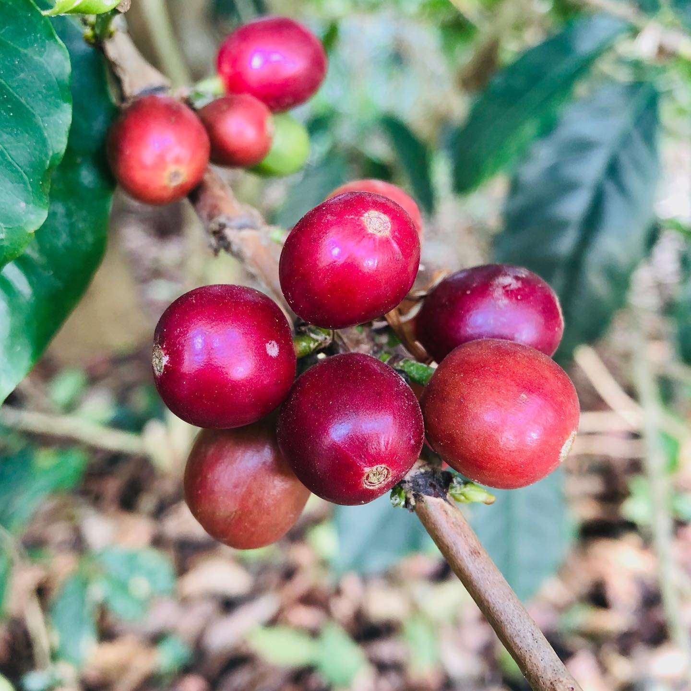
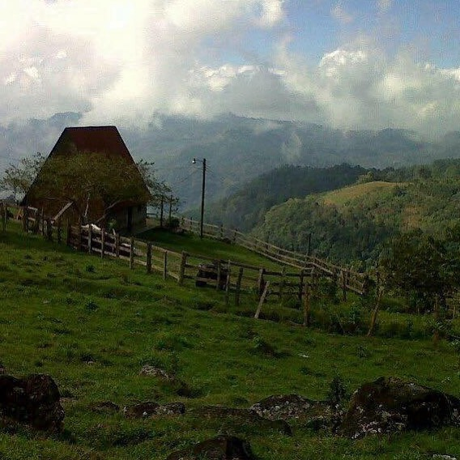
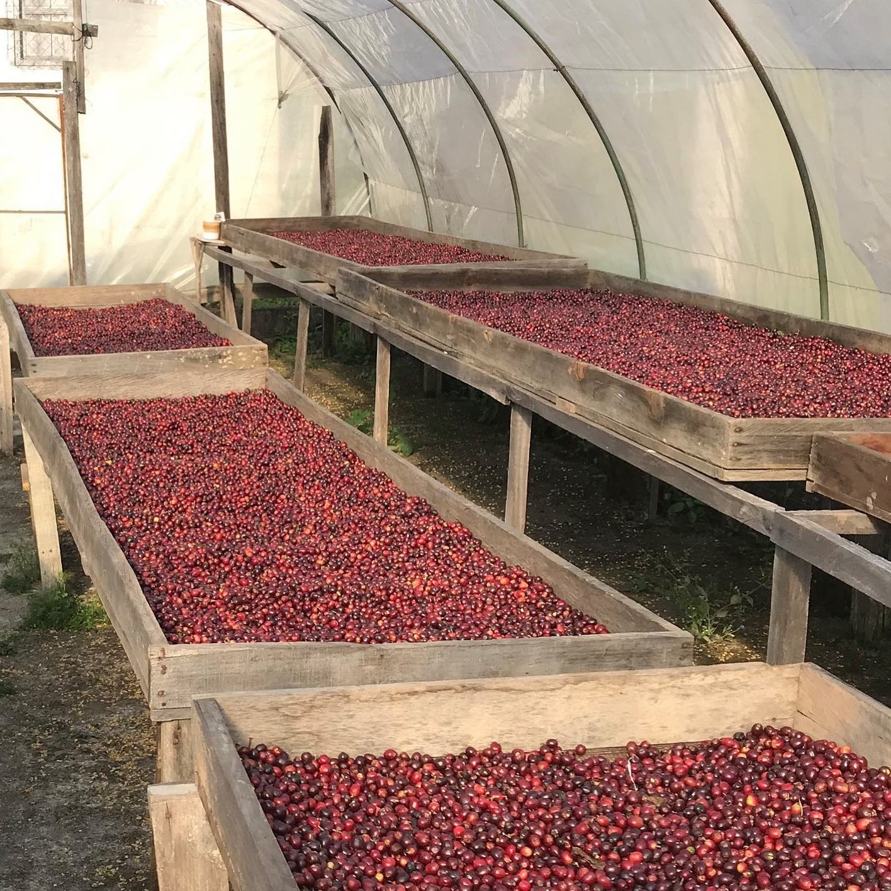

Finca La Guadalupe | Maragogype
Round bodied elegant coffee with flavors of deep chocolate and notes of stone fruits.
Learn More

Orlando Orita | Anaerobic Fermentation | Micro-lot
Full, velvety body with notes of pear and tangerine - light spice, chocolate, and strawberries in the finish.
Learn More

Gesha | Micro-lot
Fresh and especially bright for a natural, with deep flavors of passionfruit, ripe berries and cocoa. Brown sugar and jasmine in the finish.
Learn More